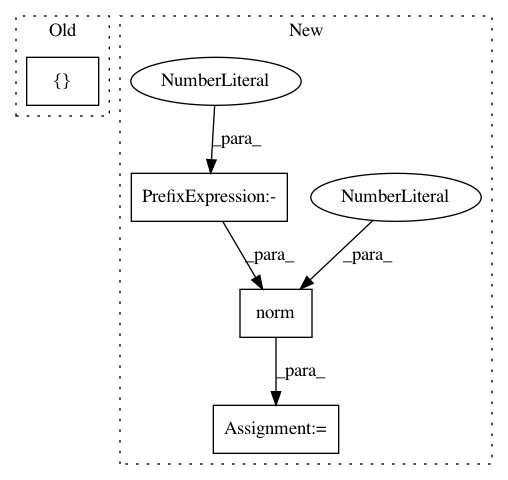

eea2e033d7e5728d2258f1fc66d3417d8cb047a4,v4/triplet_loss.py,,,#,46
Before Change
if __name__ == "__main__":
import numpy as np
y = np.array([[1.0], [1.0], [-1.0]])
deep_speaker_loss(y_true=y, y_pred=y)
After Change
if __name__ == "__main__":
import numpy as np
y = np.random.uniform(low=-1, high=1, size=(3 * 4, 10))
y /= np.linalg.norm(y, 2, axis=1, keepdims=True)
deep_speaker_loss(y_true=y, y_pred=y)
In pattern: SUPERPATTERN
Frequency: 3
Non-data size: 4
Instances
Project Name: philipperemy/deep-speaker
Commit Name: eea2e033d7e5728d2258f1fc66d3417d8cb047a4
Time: 2020-04-10
Author: premy.enseirb@gmail.com
File Name: v4/triplet_loss.py
Class Name:
Method Name:
Project Name: rusty1s/pytorch_geometric
Commit Name: 1697ad9a5cb50f61583735f8e442f80fc72a473c
Time: 2018-05-12
Author: matthias.fey@tu-dortmund.de
File Name: torch_geometric/transform/polar.py
Class Name: Polar
Method Name: __call__
Project Name: rusty1s/pytorch_geometric
Commit Name: 1697ad9a5cb50f61583735f8e442f80fc72a473c
Time: 2018-05-12
Author: matthias.fey@tu-dortmund.de
File Name: torch_geometric/transform/spherical.py
Class Name: Spherical
Method Name: __call__